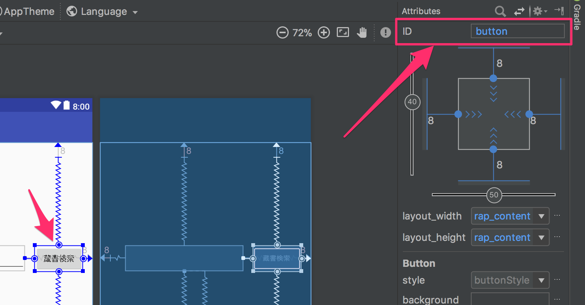
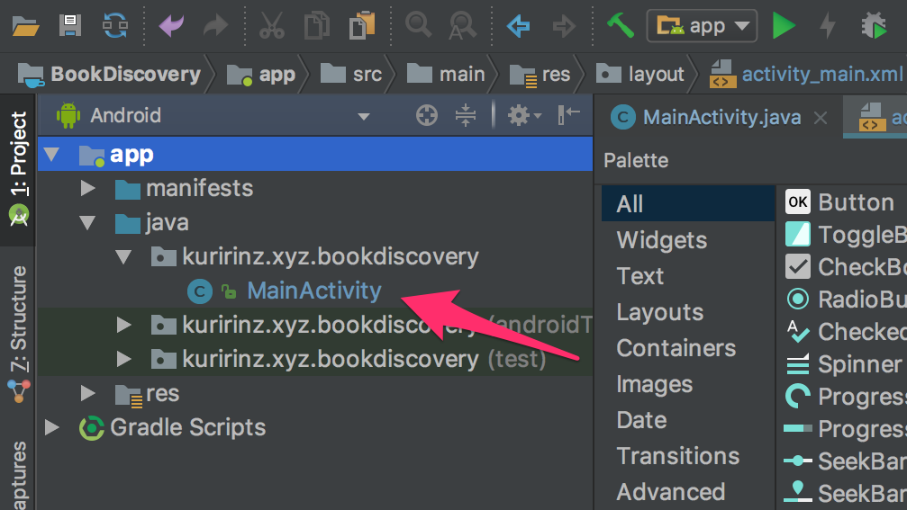

アプリの基本イベントとなるボタンが押された時の処理を学習し、蔵書検索ボタンの機能を作り始めます。
合わせてコンソールログの出力、Toast(トースト)の機能を試します
当ページではアプリのボタンが押下された時のプログラム実装を学習します。
またボタンや画面の裏で値を保持しておく機能として変数という概念を学習します。
前のページで検索画面のレイアウト実装を解説しています
次のページでは非同期処理やAPI通信機能を使い実際に蔵書検索の機能の作り込みを解説します。
ボタン押下処理
アプリを作る上で一つは必ず存在するボタン。
普段何気なく使っているボタンが押された時、プログラムが実行され別の画面を表示したり、何か計算を行なってユーザに向けて画面に表示するなど
見えないところで色々なプログラムが動いています。
当ページでは画面の操作としてボタンを押した時にログを表示したり、Toast(トースト)と呼ばれるユーザに向けて情報を表示するプログラムの実装を解説していきます。
今回プログラムは「MainActivity.java」というファイルにボタンが押された時のプログラムを記述していきます。
ですが、前のページで画面レイアウトを作成したのがactivity_main.xmlというファイルでした。
別のファイルです…なので「MainActivity.java」にactivity_main.xmlファイルを取り込む必要があります。
「MainActivity.java」でactivity_main.xml内のボタンを使う準備を行います。
javaプログラムとxmlレイアウトの関連付け
一つ前のレイアウト作成の内容で作成したxmlレイアウトですが、
今回プログラムを記述する”MainActivity.java”が処理された時に表示されるプログラムがすでに記述されています。
それが以下のコード内矢印に囲まれてるプログラムでMainActivity.javaが処理された時にレイアウトの読み込みを行なっています。
MainActivity.java1
2
3
4
5
6
7
8
9
10
11...
public class MainActivity extends AppCompatActivity {
@Override
protected void onCreate(Bundle savedInstanceState) {
super.onCreate(savedInstanceState);
//↓↓↓↓↓↓↓↓↓↓↓↓レイアウト読み込み↓↓↓↓↓↓↓↓↓↓↓↓
setContentView(R.layout.activity_main);
//↑↑↑↑↑↑↑↑↑↑↑↑↑↑↑↑↑↑↑↑↑↑↑↑↑↑↑↑↑↑↑↑↑↑↑↑↑↑↑
}
}
「おまじない」という言葉で紹介されることもありますが、このコードが書かれていないと画面には何も表示されず、真っ白な画面で止まってしまうので必ず記述しましょう。
簡単に図にしてみます。
上記のコードが記述されることで画面にレイアウトが表示されていることがわかりました、次にButtonをクリックしたときに検索などの処理を行うにはMainActivity.javaなどjavaファイルでクリックされた時のプログラムを書く必要があります。
ただ、レイアウトを作成したのは”activity_main.xml”ファイルですので別のファイルです、ですがjavaファイルのプログラムからxmlファイルのボタンなどを関連付けることができます。
そのためには”activity_main.xml”に配置したButtonをMainActivity.javaで関連付け、操作するための名前をつける必要があります。
ButtonやEditTextなどのウィジェットをjavaプログラムから関連付けるにはいくつかの方法があります、一番よく使う方法としてfindViewById()を使う方法です、”setContentView”で読み込んだレイアウトの中からウィジェットやビューを関連付けることができます。
ウィジェットやビューを関連づけるためにactivity_main.xml内のButtonやEditTextなどにユニークID(名称)を設定する必要があります。
ユニークIDの設定はレイアウトファイルで行いますのでactivity_main.xmlを開いてください。
はじめに”蔵書検索”ボタンをjavaプログラムから関連づけるためのユニークID(名称)を設定します、
“蔵書検索”ボタンをクリックしAttributesエリアから“ID”項目を以下のように修正します

button -> BookSearchBtn
このAttributesの“ID”という項目がjavaプログラムから関連づける時に必要な情報になります。
では他の項目も同じように“ID”項目を変更していきます。
※もし変更前IDが一致していなくても、Noと場所の照らし合わせを正として修正してください
| No. | 変更前のID | 変更後ID |
|---|---|---|
| ① | button | BookSearchBtn |
| ② | button2 | LibSearchBtn |
| ③ | button3 | HistoryBtn |
| ④ | editText | BookSearchEdit |
| ⑤ | editText2 | LibSearchEdit |
IDを変更するとComponent Treeの内容も変更が反映されます
各ウィジェットにIDが設定できたら”MainActivity.java”にプログラムを追加してウィジェットをactivity_main.xml内のWidgetなどと関連付け、MainActivity.javaで使う時の名前をつけていきます。
MainActivity.javaを編集します。

ではfindViewByIdメソッドと“activity_main.xml”に設定したIDを使ってButtonウィジェットを探します
コード記述する中でIDの入力中に小さいリスト表示がされると思いますので十字キーの上下を押して選択し、Enterキーを押せばプログラムに反映されます。
MainActivity.java1
2
3
4
5
6
7
8
9
10
11
12
13
14
15
16
17...
public class MainActivity extends AppCompatActivity {
//↓↓↓↓↓↓↓↓↓↓↓↓↓↓↓↓↓↓追加↓↓↓↓↓↓↓↓↓↓↓↓↓↓↓↓↓↓
// レイアウトxmlと関連付けるWidget
private Button bookSearchBtn;
//↑↑↑↑↑↑↑↑↑↑↑↑↑↑↑↑↑↑↑↑↑↑↑↑↑↑↑↑↑↑↑↑↑↑↑↑↑↑↑
@Override
protected void onCreate(Bundle savedInstanceState) {
super.onCreate(savedInstanceState);
setContentView(R.layout.activity_main);
//↓↓↓↓↓↓↓↓↓↓↓↓↓↓↓↓↓↓追加↓↓↓↓↓↓↓↓↓↓↓↓↓↓↓↓↓↓
bookSearchBtn = findViewById(R.id.BookSearchBtn);
//↑↑↑↑↑↑↑↑↑↑↑↑↑↑↑↑↑↑↑↑↑↑↑↑↑↑↑↑↑↑↑↑↑↑↑↑↑↑↑
}
}
上記追加した２行でactivity_main.xmlの”BookSearchBtn”（”蔵書検索”ボタン）を、MainActivityで使う時の名前としてbuttonSearchという名前を設定するというプログラムを記述することができました。
２行の内訳としては以下です
| No. | 各No.のコードの説明 |
|---|---|
| ① | ②〜③で宣言するウィジェットの使用できる範囲を決める単語 |
| ② | activity_main.xml内のウィジェットと関連づける型 |
| ③ | MainActivity.javaで使う時のユニークな名前 |
| ④ | ②〜③で宣言したウィジェットを変更する時の記述方法 |
| ⑤ | activity_main.xml内のウィジェットと関連付けを行うためのプログラム |
| ⑥ | activity_main.xml内の関連付けを行うウィジェット/ビューのユニークID |
①〜③で追加したコードをクラスの宣言と言います、これは後ほど解説しますので、深く考えずに進んでください！
これで”蔵書検索”ボタンをxmlレイアウトとMainActivity.javaのプログラムで関連付けることができました。
ボタンクリックアクションの実装
次に”蔵書検索”ボタンのクリック時に何か処理をする場合のプログラムを記述していきます。
MainActivity.java1
2
3
4
5
6
7
8
9
10
11
12
13
14
15
16
17
18
19
20
21
22...
public class MainActivity extends AppCompatActivity {
// レイアウトxmlと関連付けるWidget
private Button bookSearchBtn;
@Override
protected void onCreate(Bundle savedInstanceState) {
super.onCreate(savedInstanceState);
setContentView(R.layout.activity_main);
bookSearchBtn = findViewById(R.id.BookSearchBtn);
//↓↓↓↓↓↓↓↓↓↓↓↓↓↓↓↓↓↓追加↓↓↓↓↓↓↓↓↓↓↓↓↓↓↓↓↓↓
bookSearchBtn.setOnClickListener(new View.OnClickListener() {
@Override
public void onClick(View v) {
Log.d("BookSearchBtn", "onClick: BookSearch Button");
}
});
//↑↑↑↑↑↑↑↑↑↑↑↑↑↑↑↑↑↑↑↑↑↑↑↑↑↑↑↑↑↑↑↑↑↑↑↑↑↑↑
}
}
上記まで実装が完了したら動作確認をしてみましょう、Runアイコンをクリックしてエミュレータを起動します。
アプリ画面が表示されたら蔵書検索ボタンをクリックしてみてください。
以下のようにAndroid Studioの左下Logcatタブをクリックし、赤枠のログが出力されていることを確認してみましょう。
上記で表示させたログですが、出力するためには以下のようにコードを記述する必要があります。
ログはプログラム不具合の原因を調査したり、期待するデータが取得できていることなどに活用しますのでログを出力させるための
テンプレートとして以下の書き方を覚えておきましょう。1
Log.d("tag name", "message");
ボタンを押した時に何か処理を行うためのプログラムを実装できたので工程などをおさらいしてみましょう。
文字の色分けなどは以下の通りです
- 青文字の「ボタン押下時に検索を行う」が大きな課題
- 赤文字、黒文字で書かれたところがエンジニアの気づくべき手順
- また赤文字の「画面にボタンを表示する必要がある」「ボタンが押された時にプログラムを実行する必要がある」の２つは編集が必要なファイルごとの課題
- 灰色の四角に囲われている内容がエンジニアがコードを記述する必要のある箇所
次はToast機能を使って蔵書検索ボタンの横に配置したEditTextに入力された文字を画面に表示するプログラムを作っていきます。
MainActivity.javaのコードを修正していきます。
MainActivity.java1
2
3
4
5
6
7
8
9
10
11
12
13
14
15
16
17
18
19
20
21
22
23
24
25
26
27
28
29
30
31...
public class MainActivity extends AppCompatActivity {
// レイアウトxmlと関連付けるWidget
private Button bookSearchBtn;
//↓↓↓↓↓↓↓↓↓↓↓↓↓↓↓↓↓↓追加↓↓↓↓↓↓↓↓↓↓↓↓↓↓↓↓↓↓
private EditText bookSearchEditor;
//↑↑↑↑↑↑↑↑↑↑↑↑↑↑↑↑↑↑↑↑↑↑↑↑↑↑↑↑↑↑↑↑↑↑↑↑↑↑↑
@Override
protected void onCreate(Bundle savedInstanceState) {
super.onCreate(savedInstanceState);
setContentView(R.layout.activity_main);
bookSearchBtn = findViewById(R.id.BookSearchBtn);
//↓↓↓↓↓↓↓↓↓↓↓↓↓↓↓↓↓↓追加↓↓↓↓↓↓↓↓↓↓↓↓↓↓↓↓↓↓
bookSearchEditor = findViewById(R.id.BookSearchEdit);
//↑↑↑↑↑↑↑↑↑↑↑↑↑↑↑↑↑↑↑↑↑↑↑↑↑↑↑↑↑↑↑↑↑↑↑↑↑↑↑
bookSearchBtn.setOnClickListener(new View.OnClickListener() {
@Override
public void onClick(View v) {
Log.d("BookSearchBtn", "onClick: BookSearch Button");
//↓↓↓↓↓↓↓↓↓↓↓↓↓↓↓↓↓↓追加↓↓↓↓↓↓↓↓↓↓↓↓↓↓↓↓↓↓
Toast.makeText(getBaseContext()
, "入力された文字は [" + bookSearchEditor.getText().toString() + "]です。"
, Toast.LENGTH_LONG).show();
//↑↑↑↑↑↑↑↑↑↑↑↑↑↑↑↑↑↑↑↑↑↑↑↑↑↑↑↑↑↑↑↑↑↑↑↑↑↑↑
}
});
}
}
コードの修正が終わったらRunアイコンをクリックしてエミュレータにアプリをインストールし直します。
アプリ画面が表示されたら文字を入力してから蔵書検索ボタンをクリックしてみましょう。
前回のログ確認と違い、以下の画面のように文字が表示されたでしょうか？
この画面上に現れる機能がToastです、ボタンが押された時にユーザに何か情報を伝える時などに利用します。
またToastは一定時間で自動的に非表示になりますのでユーザが確認ボタンを押す必要もなく簡易なプログラムで利用することができます。
色々なボタンイベントの実装
ボタンが押された時のプログラムの実装解説としては以上になります。
しかしボタンイベントを実装方法に絞ってもボタンが押された時のプログラムの記述方法がいくつもあります。
その例をいくつか紹介します。
ここでは色々な新しい単語も紹介しますが、単語に関しては実際に利用する時に詳しく解説します。
パターン１
bookSearchBtnの宣言場所が違う実装方法
パターン１はbookSearchBtnインスタンスの宣言スコープが違う実装方法です
1 | ... |
パターン２
パターン１や当ページで紹介したプログラムから、ボタンイベントのプログラム自体を宣言し固有名称をつけた実装方法です
この実装方法にはメリットも少なくわかりにくいので比較的少ない実装方法です
1 | ... |
パターン３
View.OnClickListerインターフェースをMainActivityクラスに付与した実装方法
パターン３はボタンが押された時の実装をMainActivityクラスに委譲した実装方法です
1 | ... |
パターン４
新しくボタンクリックイベントのインナークラス(外部クラス)を作成する実装方法
この方法はリスト表示されている時などに使うことが多いです
1 | ... |
他にもボタンが押された時のプログラムの書き方はありますが、上記の4パターンが使われていることが多いです。
ボタンに限ったプログラムの書き方だけでもこれだけのパターンがあり、ボタンが押されたイベント以外にも同じファイルにプログラムが
記述されると最初はプログラムを見るのが嫌になってしまうこともあるかもしれません。
ですが、プログラムを細かく見る（読む）ことで名前のつけ方に共通点を見つけたり単語を検索しながら考え、失敗を繰り返しながら試すことで
プログラムを深く理解することができるようになります。
以上でボタンが押された時のプログラム実装ができました、次のページでいよいよ本を検索するプログラムを記述していきます。
非同期処理、REST API通信の実装